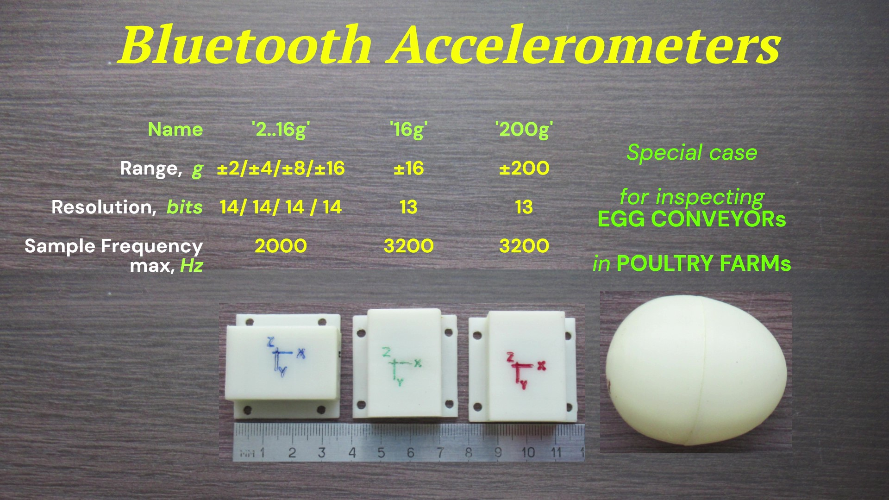

Акселерометр
Bluetooth
от
±2g до ±200g
3
оси, питание от аккумулятора 3,7В или батарейки,
программно
переключаемые диапазоны ускорений
для
акселерометра 16g : ±2g/±4g/±8g/±16g
для
акселерометра 200g : ±25g/±50g/±100g/±200g
Акселерометр
Bluetooth
выполнен на базе микросхемы цифрового
MEMS-акселерометра
Analog
Devices.

Комплект:
акселерометр
Bluetooth
и
Bluetooth-USB
адаптер

Для питания акселерометра Bluetooth
можно
использовать,
например,
аккумулятор
LP302030-PCM-LD 3,7В 130мА*час,
его
габариты чуть меньше
габаритов платы,
а
заряда хватит на несколько
часов работы (см. Потребляемый
ток).

Акселерометр Bluetooth
с аккумулятором LP302030-PCM-LD

Акселерометры Bluetooth
в корпусах, с аккумуляторами и выключателями;
в прямоугольные корпуса встроены магниты для крепления и разъём зарядки аккумулятора,
корпус в форме яйца для поиска мест с
сильным соударением яиц на
конвейерах птицефабрик.
Видео тестов акселерометров Bluetooth
в корпусах:
1. акселерометр
вращается в стиральной машине в режиме отжима (длительное ускорение 220g)
2. выстрел акселерометром из
катапульты - запись ускорений при выстреле и ударе об землю
3. магнитное
крепление акселерометра
4. акселерометр
в корпусе в форме яйца - скатывание по бетонной лестнице -определение места сильнейшего удара по видео и графику ускорения.
5. видеообзор испытаний, конструкции, особенностей
Акселерометр
Bluetooth 16g и акселерометр
Bluetooth 200g изготавливаются
на одинаковых платах, их отличие в диапазонах измеряемых ускорений.
Остальные параметры и программное обеспечение идентичны.
ВИДЕО Акселерометр
Bluetooth - измерение в автономном режиме с графиком в реальном времени
Прилагаемое
программное
обеспечение
позволяет
определить следующие параметры измерения:
- диапазон измеряемых ускорений
акселерометра
Bluetooth
16g USB
±2g, ±4g,
±8g
или ±16g,
акселерометра Bluetooth 200g USB ±25g, ±50g, ±100g или ±200g,
-
число осей акселерометра,
по которым
выполняется измерение (использование
не всех 3-х осей актуально при построении графика по большому числу
выборок - при построении
графика по массивам данных в несколько
мегабайт требуется
ощутимое время, если информативны результаты, например, только по одной
оси, время потсроения графика можно сократить втрое),
- частоту выборки акселерометра 3200 Гц, 1600 Гц, 800 Гц, 400
Гц, 200Гц, 100Гц,
50Гц, 25 Гц, 12,5Гц или 6,25 Гц
- время измерения / число выборок, ограниченные только объемом
свободной оперативной памяти вашего компьютера.
Программное обеспечение позволяет
управлять
акселерометром, считывать результаты измерения, отображать их в виде
графиков ускорения и сохранять полученные данные в виде файлов.
Компьютерное
приложение, работающее с
акселерометром, обеспечивает удобные функции:
- просмотр
графиков,
- обработку
сигналов (сглаживание,
вычисление спектра, тренда),
- поиск
файлов по
комментариям к ним,
- документирование
результатов:
- сохранение данных графика или его
фрагментов в
текстовом формате txt или в формате csv (для импорта в
MS Excel),
- копирование
в буфер обмена для
полседующей вставки в документы, например, MS Word, PowerPoint,
- графиков
(в wmf-формат, качество
картинки не теряется при сжатии/растягивании)
- комментариев
к файлам с
автоматическим добавлением информации о файле (имя, время записи)
- результатов
вычисления спектра
(значение и частота максимальной спектральной составляющей, все
спектральные составляющие в текстовом формате) и тренда (формула,
описывающая линию тренда)
Дополнительная
возможность приложения Акселерометра Bluetooth - при
частоте выборки не
более 100Гц возможен просмотр
графиков сигналов в реальном
времени
(режим осциллографа), ВИДЕО
Акселерометр Bluetooth демонстрирует именно
этот режим.
Измерительные параметры цифровых акселерометров Bluetooth,
USB и RS-485 одинаковы,
пользовательский интерфейс компьютерных приложений этих акселерометров
мало отличается.
Поэтому результаты, приведенные для акселерометров
USB и RS-485
на страничках о применении
акселерометров, об обработке
сигналов акселерометров, могут быть получены в тех же
условиях и акселерометрами Bluetooth.
Для ознакомления с приложением и результатами измерения можно скачать
архив с демо-приложением и Справочной системой для акселерометра USB acc-usb
. Демо-приложение позволяет открывать и обрабатывать файлы данных,
записанные акселерометрами. Архив с некоторыами файлами данных
находится здесь: dataAcc-usb
.
____________________________________________
- соединение установлено, режим ожидания (измерение не выполняется)
7...8мА
- выполняется измерение с передачей данных
22мА
- соединение разорвано 45мА